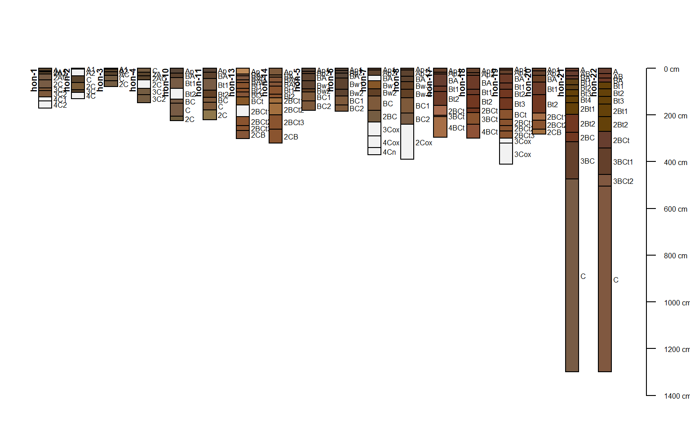
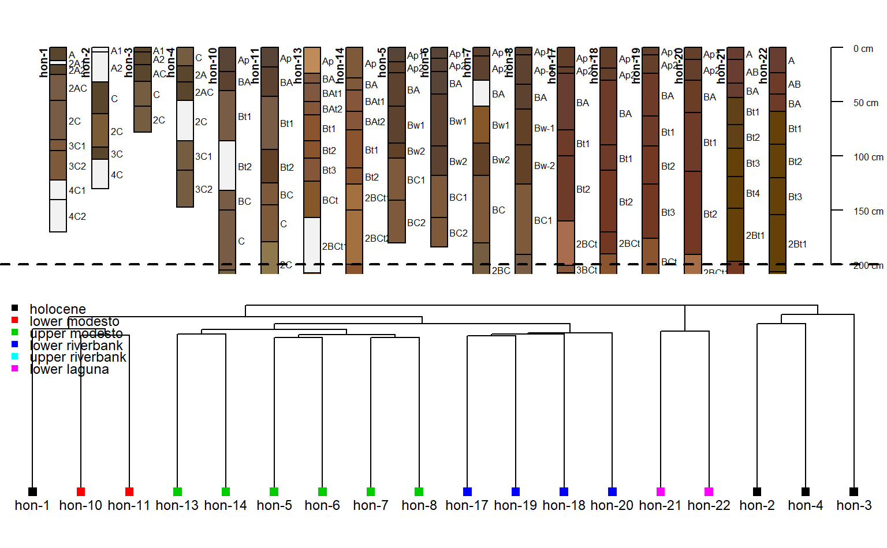

sp2.RdA collection of 18 soil profiles, consisting of select soil morphologic attributes, associated with a stratigraphic study conducted near Honcut Creek, California.
data(sp2)
A data frame with 154 observations on the following 21 variables.
idprofile id
surfacedated surface
tophorizon top in cm
bottomhorizon bottom in cm
bound_distincthorizon lower boundary distinctness class
bound_topographyhorizon lower boundary topography class
namehorizon name
textureUSDA soil texture class
propfield-estimated clay content
structure_gradesoil structure grade
structure_sizesoil structure size
structure_typesoil structure type
stickinessstickiness
plasticityplasticity
field_phfield-measured pH
hueMunsell hue
valueMunsell value
chromaMunsell chroma
rRGB red component
gRGB green component
bRGB blue component
soil_colorR-friendly encoding of soil color
Busacca, Alan J.; Singer, Michael J.; Verosub, Kenneth L. 1989. Late Cenozoic stratigraphy of the Feather and Yuba rivers area, California, with a section on soil development in mixed alluvium at Honcut Creek. USGS Bulletin 1590-G.
http://casoilresource.lawr.ucdavis.edu/
data(sp2) # convert into SoilProfileCollection object depths(sp2) <- id ~ top + bottom # transfer site-level data site(sp2) <- ~ surface # generate a new plotting order, based on the dated surface each soil was described on p.order <- order(sp2$surface) # plot par(mar=c(1,0,3,0)) plot(sp2, plot.order=p.order)#># setup multi-figure output par(mfrow=c(2,1), mar=c(0,0,1,0)) # truncate plot to 200 cm depth plot(sp2, plot.order=p.order, max.depth=200)#>abline(h=200, lty=2, lwd=2) # compute numerical distances between profiles # based on select horizon-level properties, to a depth of 200 cm d <- profile_compare(sp2, vars=c('prop','field_ph','hue'), max_d=200, k=0, sample_interval=5, rescale.result=TRUE)#>#># plot dendrogram with ape package: if(require(ape) & require(cluster)) { h <- diana(d) p <- as.phylo(as.hclust(h)) plot(p, cex=0.75, label.offset=0.01, font=1, direct='down', srt=90, adj=0.5, y.lim=c(-0.125, 0.5)) # add in the dated surface type via color tiplabels(col=as.numeric(sp2$surface), pch=15) # based on distance matrix values, YMMV legend('topleft', legend=levels(sp2$surface), col=1:6, pch=15, bty='n', bg='white', cex=0.75) }